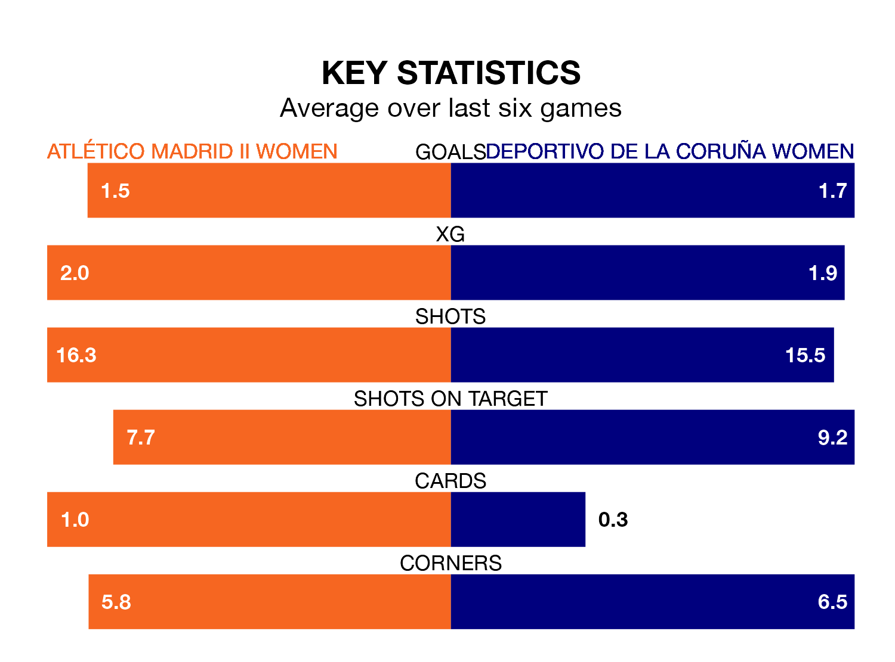

Deportivo de La Coruña Women face Atlético Madrid II Women on Saturday seeking to protect their formidable unbeaten run in Primera Federación Femenina.
Deportivo de La Coruña are unbeaten in nine, with six wins and three draws, ahead of the 11am kick-off.
They face an Atlético Madrid II team who have won four and drawn two over the same number of games.
Deportivo de La Coruña are top of the table after 14 games, of which they have won 10 and drawn three, earning 33 points.
Atlético Madrid II are six places behind the away side in seventh, with five wins and three draws putting them on 18 points.
With 24 goals in 14 games so far this season, Deportivo de La Coruña are the league's joint-third-highest scorers with 1.7 goals per game. And they are conceding fewer than average, letting in nine goals at a rate of 0.6 per game.
The hosts are also above average scorers, with 1.4 goals per game, compared to a league average of 1.2. They have conceded 1.1 goals per game.
Atlético Madrid II's last match was on January 7, a 5-1 win against Europa Women, with getting the goals for Atlético Madrid II.
Deportivo de La Coruña beat Madrid II Women 3-0 last time out, on Saturday, with on the scoresheet.
Updated: 14:53 (UTC), 16/01/24